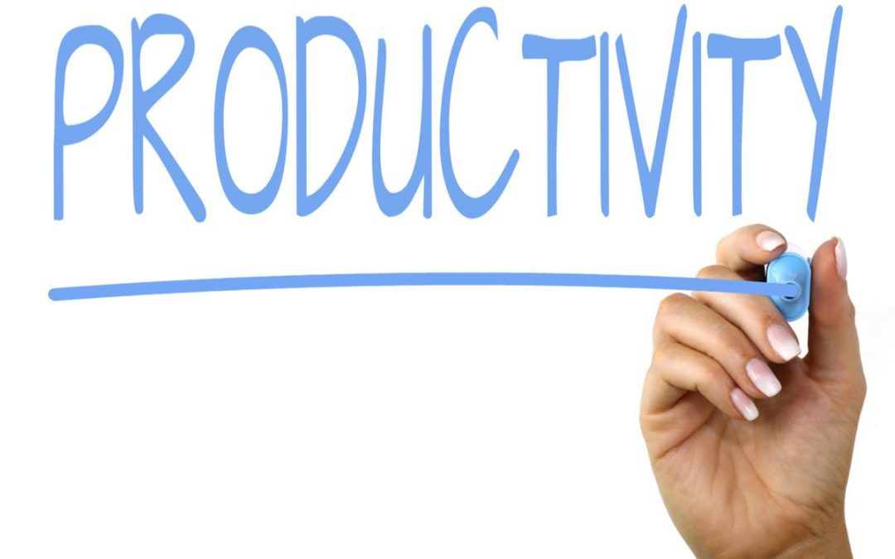

Boost Your Productivity with These Productivity Apps
By: Camila
Introduction
Boost Your Productivity with These Productivity Apps
In today's fast-paced world, where technology is advancing at an unprecedented rate, productivity has become synonymous with success. Whether you're a freelancer, a small business owner, or someone who simply wants to get more done in your day, there are hundreds of productivity apps available that can help you stay organized, focused, and efficient.
In this section of our website, we'll be introducing you to some of the most popular productivity apps on the market, highlighting their features, and explaining how they can help you accomplish more in less time. From to-do list apps that keep you on track, to calendar apps that help you manage your schedule, to note-taking apps that enable you to capture your thoughts on the go, we've got you covered.
We'll also be discussing some of the latest trends in productivity apps, such as the use of artificial intelligence to automate routine tasks, and the rise of gamification as a way to motivate users to achieve their goals. Additionally, we'll be sharing some best practices for choosing and using productivity apps, including tips for setting achievable goals, staying motivated, and managing your time effectively.
So whether you're an entrepreneur looking to streamline your workflow, a student looking to stay on top of your studies, or simply someone who wants to make the most of every minute in your day, our guide to productivity apps will give you the tools you need to succeed. So why wait? Start exploring our website today!
ad space
Trello
Trello - The Ultimate Productivity Booster for Project Management
Managing multiple tasks and projects can be challenging, particularly when the To-Do lists end up scattered everywhere. Trello is a popular project management tool that streamlines projects and tasks all in one place, simplifying collaboration, and boosting productivity.
Whether you are a professional or a student, self-employed or a part of a team, Trello can be the game-changer. With its visual approach to task management, Trello offers a user-friendly platform to plan, track, and manage your work throughout the day.
Trello’s digital cards represent tasks and projects, allowing you to organize your work based on your preferences. You can add to-do lists, set due dates, attach files, and even collaborate with team members in real-time. Trello’s drag-and-drop functionality makes it easy to move cards around, track progress, and see how a project is shaping up.
Trello also offers an array of integrations with other productivity tools, such as Google Calendar, Zapier, Slack, and Dropbox, to name a few. These apps can work together seamlessly, giving you a complete workflow solution.
Studies have shown that using productivity apps like Trello can increase efficiency and overall work satisfaction. By having all your tasks and projects in one place, it not only frees up mental space but also helps you avoid the anxiety of missing deadlines.
In conclusion, if you're looking for a productivity app that would provide you with a simple yet effective approach to managing your daily work, then Trello is your go-to. It’s a powerful and accessible tool that helps individuals and teams collaborate and achieve their goals seamlessly. Start using Trello today and streamline your workflow.
ad space
Asana
Do you ever feel like there just aren't enough hours in the day? Like you're constantly swamped with work but never seem to be making any progress? The good news is that you're not alone. The even better news is that there are a ton of productivity apps out there to help you take control of your time and get more done. One of the most popular and effective of these apps is Asana.
Asana is a task management app that's designed to help teams work more efficiently and effectively. It's used by everyone from freelancers to Fortune 500 companies, and it's easy to see why. With Asana, you can create project boards, assign tasks and deadlines, and collaborate with your team in real-time. You can also set reminders and notifications to keep everyone on track.
One of the things that sets Asana apart from other task management apps is its intuitive design. It's simple and straightforward, so you don't have to spend hours figuring out how to use it. And because it's available on multiple platforms (desktop, mobile, and web), you can access your tasks and projects from anywhere.
But what really makes Asana stand out is its ability to streamline communication and collaboration. With Asana, everyone on your team can see what tasks are assigned to whom, what deadlines are coming up, and what progress has been made. This means you can avoid the dreaded email chains and endless meetings, and focus on actually getting work done.
In short, if you're looking to boost your productivity and make the most of your time, Asana is an app you definitely need to check out. So why not give it a try? Your to-do list will thank you.
ad space
Todoist
At the core of productivity lies the ability to organize and prioritize your tasks. This can be a daunting task, however, especially when you have many responsibilities to juggle. Fortunately, technology has made it easier for us to manage our daily schedules with the help of productivity apps. Among these apps, Todoist stands out as a powerful tool that can help you boost your productivity, increase focus and reduce stress.
Todoist is a simple yet powerful app that allows you to create to-do lists, set reminders, and schedule tasks in one place. It has an intuitive interface that makes it easy to use and flexible enough to fit your unique needs. Whether you're managing work projects, school assignments, household chores, or personal goals, Todoist can help you stay on top of your tasks and make progress towards your goals.
One of the most useful features of Todoist is its ability to organize tasks into different projects and sub-projects. This allows you to break down complex tasks into smaller, more manageable ones, and prioritize them accordingly. You can also set deadlines, assign labels, and add notes to each task to provide context and make it easier to complete.
Todoist also has a built-in calendar view that shows you all your upcoming tasks and events in one place. This makes it easier to plan your day, week or month ahead and avoid overlapping commitments. Additionally, you can integrate Todoist with other apps, such as Google Calendar, Slack, or Zapier, to streamline your workflows and automate repetitive tasks.
Overall, Todoist is a productivity app that can help you achieve more with less stress and more focus. It's available on multiple platforms, including desktop, mobile, and web, and it syncs seamlessly across all devices. Whether you're a busy professional, a student, or a homemaker, Todoist can help you stay organized, productive, and motivated. So why not give it a try and see for yourself how productive you can be?
ad space
RescueTime
As our world becomes increasingly fast-paced, successful professionals are always looking for ways to make the most out of their time without sacrificing quality or efficiency. Whether you're an entrepreneur, a freelancer, a student or a full-time employee, chances are you've struggled with distractions and procrastination. Luckily, technology has come up with a solution! Enter RescueTime, an app designed to track your digital activities and help you form better habits.
RescueTime is a productivity app that runs in the background of your computer or mobile device, watching over your every move online. It records how much time you spend on different applications and websites, as well as how many times you switch between them. Based on this data, it generates detailed reports that show you where your time is going and how productive you really are. The app can also set goals for you, alerting you when you've exceeded your limits on certain activities and encouraging you to stay focused.
So why is RescueTime such a game-changer for boosting productivity? For starters, it helps you identify your bad habits and distractions. Do you spend hours scrolling through social media or checking your inbox? Do you struggle with procrastination or time-wasting activities? Once you become aware of these patterns, you can take steps to eliminate them and free up more time for the things that matter.
But RescueTime doesn't just point out your flaws – it also celebrates your successes. By showing you how much time you've spent on productive activities, such as writing, researching, or exercising, it encourages you to keep up the good work and build momentum. You can even set goals for yourself and track your progress, making productive behavior more rewarding and satisfying.
Overall, RescueTime is a must-have for anyone looking to boost their productivity and achieve their goals. By tracking your digital activities and offering insights and support, it helps you become more mindful, focused, and accomplished. Give it a try today and see how much more you can accomplish!
ad space
Conclusion
As you wrap up your quest for the best productivity apps, you've learned that there are many tools out there to help you stay organized, focused, and efficient. Whether you need help with managing your to-do list, keeping track of your time, or streamlining your communication, these productivity apps can be valuable assets to your personal and professional life.
Now that you have explored the top productivity apps, you can choose the ones that are best suited to your needs and preferences. Keep in mind that the right app can make a significant impact on your productivity, but only if you use it consistently and in the right context.
One important aspect of using productivity apps is to not let them become a distraction in themselves. It's easy to spend too much time tinkering with the settings or searching for the perfect app, rather than actually getting work done. Remember that these apps are tools to help you be more productive, not a substitute for the work itself.
Another crucial factor to consider is the need to continuously evaluate and adjust your app usage. As your workload and priorities change, you may need to switch up your productivity tools or adjust how you use them. Be open to trying new apps and strategies to find the ones that work best for you.
In conclusion, by incorporating productivity apps into your workflow, you can increase your efficiency and achieve more in less time. With the right tools in your arsenal, you can take control of your schedule, stay focused on your goals, and make every day more productive. So why not give it a try and see the difference it can make?
ad space